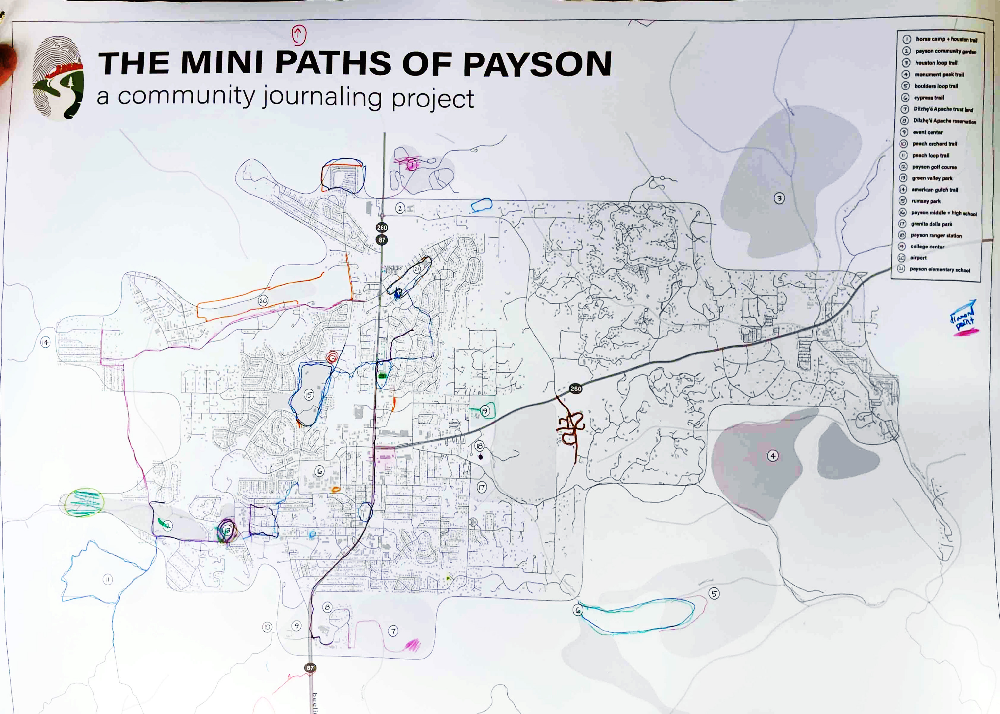

<!DOCTYPE html>
<html lang="en">
<head>
<meta charset="UTF-8" />
<meta name="viewport" content="width=device-width, initial-scale=1.0" />
<title>The Mini Paths of Payson</title>

<link rel="preconnect" href="https://fonts.googleapis.com">
<link href="https://fonts.googleapis.com/css2?family=Architects+Daughter&family=Inter:wght@300;400;500;600&display=swap" rel="stylesheet">
<link rel="stylesheet" href="https://unpkg.com/leaflet@1.9.4/dist/leaflet.css" />
<script src="https://unpkg.com/leaflet@1.9.4/dist/leaflet.js"></script>

<!-- React -->
<script src="https://unpkg.com/react@18/umd/react.production.min.js"></script>
<script src="https://unpkg.com/react-dom@18/umd/react-dom.production.min.js"></script>
<script src="https://unpkg.com/@babel/standalone/babel.min.js"></script>

<style>
/* ── Reset & tokens ─────────────────────────────────────────── */
*, *::before, *::after { box-sizing: border-box; margin: 0; padding: 0; }

:root {
  --mp-ink:       #2a2118;
  --mp-ink-soft:  #6b5d4f;
  --mp-ink-faint: #b0a090;
  --mp-paper:     #f5f0e8;
  --mp-paper2:    #ede6d8;
  --mp-paper3:    #e2d9c8;
  --mp-cream:     #faf7f1;
  --mp-orange:    oklch(62% 0.13 48);
  --mp-teal:      oklch(58% 0.09 200);
  --mp-sage:      oklch(60% 0.08 150);
  --mp-amber:     oklch(65% 0.12 60);
  --mp-forest:    oklch(54% 0.10 140);

  --mp-radius: 4px;
  --mp-font-head: 'Inter', 'Helvetica Neue', 'Arial', sans-serif;
  --mp-font-body: 'Inter', 'Helvetica Neue', 'Arial', sans-serif;
  --mp-font-mono: 'Courier New', Courier, monospace;
  --mp-font-hand: 'Inter', 'Helvetica Neue', sans-serif;
  --mp-font-hand: Georgia, serif;

  --mp-shadow: 0 2px 12px rgba(42,33,24,0.10), 0 1px 3px rgba(42,33,24,0.08);
  --mp-shadow-lg: 0 8px 40px rgba(42,33,24,0.16), 0 2px 8px rgba(42,33,24,0.10);
}

html, body { height: 100%; background: var(--mp-paper); color: var(--mp-ink); font-family: var(--mp-font-body); }
button { cursor: pointer; font-family: inherit; border: none; background: none; }
input, textarea { font-family: inherit; }

/* ── App shell ──────────────────────────────────────────────── */
#root { display: flex; flex-direction: column; height: 100vh; overflow: hidden; }

.topbar {
  display: flex; align-items: center; gap: 12px;
  padding: 0 20px; height: 48px; min-height: 48px;
  background: var(--mp-ink); color: var(--mp-paper);
  border-bottom: 1px solid rgba(255,255,255,0.08);
  z-index: 200;
}
.topbar__brand { display: flex; align-items: center; gap: 7px; color: var(--mp-paper); font-size: 13px; letter-spacing: 0.04em; opacity: 0.9; }
.topbar__brand:hover { opacity: 1; }
.topbar__mark { font-size: 16px; color: var(--mp-orange); }
.topbar__name { font-family: var(--mp-font-head); font-weight: 600; letter-spacing: -0.01em; }
.topbar__nav { display: flex; gap: 2px; margin-left: auto; }
.topbar__tab {
  padding: 5px 14px; font-size: 12px; color: rgba(245,240,232,0.55);
  border-radius: 3px; letter-spacing: 0.03em; transition: all 0.15s;
}
.topbar__tab:hover { color: var(--mp-paper); background: rgba(255,255,255,0.07); }
.topbar__tab.is-on { color: var(--mp-paper); background: rgba(255,255,255,0.12); }
.topbar__right { display: flex; align-items: center; gap: 10px; margin-left: 16px; }
.topbar__count { font-size: 11px; color: rgba(245,240,232,0.4); letter-spacing: 0.05em; }
.topbar__add {
  padding: 5px 13px; font-size: 12px;
  background: var(--mp-orange); color: #fff;
  border-radius: 3px; letter-spacing: 0.03em;
  transition: opacity 0.15s;
}
.topbar__add:hover { opacity: 0.88; }

/* ── Main columns ───────────────────────────────────────────── */
.mp-body { display: flex; flex: 1; overflow: hidden; }
.mp-sidebar { width: 300px; min-width: 260px; max-width: 320px; background: var(--mp-cream); border-right: 1px solid var(--mp-paper3); display: flex; flex-direction: column; overflow: hidden; z-index: 10; }
.mp-main { flex: 1; overflow: hidden; position: relative; }

/* ── Map ────────────────────────────────────────────────────── */
.mp-map-wrap { width: 100%; height: 100%; position: relative; }
.mp-map-leaflet { width: 100%; height: 100%; }
.mp-basemap-img { image-rendering: auto; }
.mp-scan-img { mix-blend-mode: multiply; }

/* ── Art canvas overlay ─────────────────────────────────────── */
/* Sits on top of the Leaflet map, full-size. Pointer-events ignored
   so the user can still pan & zoom the map underneath. */
.mp-art-canvas {
  position: absolute;
  inset: 0;
  width: 100%;
  height: 100%;
  pointer-events: none;
  z-index: 400;
  /* Soft entry; opacity is also driven from JS for fine control */
  transition: opacity 0.18s linear;
}
/* When at full art-stage, the white canvas covers everything */
.mp-art-canvas.is-fullart {
  background: #ffffff;
}

/* ── Side controls container (right-side panel) ─────────────── */
.side-controls {
  position: absolute;
  right: 50px;
  bottom: 14px;
  z-index: 600;
  width: 300px;
  display: flex;
  flex-direction: column;
  gap: 8px;
}

/* ── Style picker (vertical list, floats above painter) ─────── */
.style-picker {
  display: flex;
  flex-direction: column;
  gap: 4px;
  background: color-mix(in oklch, var(--mp-paper) 92%, transparent);
  backdrop-filter: blur(6px);
  border: 1px solid var(--mp-paper3);
  border-radius: 6px;
  padding: 4px;
  box-shadow: 0 4px 18px rgba(42,33,24,0.08);
  font-family: var(--mp-font-body);
  /* Hidden until painting >= 0.45 — no point showing it before */
  opacity: 0;
  pointer-events: none;
  transition: opacity 0.25s ease;
}
.style-picker.is-active {
  opacity: 1;
  pointer-events: auto;
}
.style-picker__tab {
  background: transparent;
  border: none;
  font-size: 11px;
  font-family: var(--mp-font-body);
  color: var(--mp-ink-soft);
  padding: 6px 12px;
  border-radius: 4px;
  cursor: pointer;
  white-space: nowrap;
  transition: all 0.12s;
  display: flex;
  align-items: center;
  gap: 6px;
}
.style-picker__tab:hover { background: rgba(42,33,24,0.06); color: var(--mp-ink); }
.style-picker__tab.is-on {
  background: var(--mp-ink);
  color: var(--mp-paper);
}
.style-picker__icon {
  width: 14px; height: 14px;
  display: inline-block;
  border-radius: 2px;
}

/* ── Save button (bottom of style picker) ───────────────────── */
.painter__save {
  margin-top: 4px;
  padding-top: 8px;
  border-top: 1px dashed var(--mp-paper3);
  display: flex;
  gap: 4px;
}
.painter__save-btn {
  font-size: 11px;
  padding: 4px 10px;
  border-radius: 999px;
  border: 1px solid var(--mp-orange);
  background: var(--mp-orange);
  color: var(--mp-paper);
  cursor: pointer;
  font-family: var(--mp-font-body);
}
.painter__save-btn:hover { filter: brightness(1.06); }
.painter__save-btn--ghost {
  background: transparent;
  color: var(--mp-orange);
}

/* ── Scan overlay controls (DEPRECATED — replaced by .painter slider) ─── */
.scan-controls { display: none !important; }

/* ── Watercolor painter: right-side panel ──────────────────── */
.painter {
  background: color-mix(in oklch, var(--mp-paper) 92%, transparent);
  backdrop-filter: blur(6px);
  border: 1px solid var(--mp-paper3);
  border-radius: 6px;
  box-shadow: 0 6px 28px rgba(42,33,24,0.10), 0 1px 3px rgba(42,33,24,0.08);
  padding: 14px 18px 12px;
  display: flex;
  flex-direction: column;
  gap: 10px;
  font-family: var(--mp-font-body);
}
.painter__head {
  display: flex;
  flex-direction: column;
  gap: 2px;
}
.painter__eyebrow {
  font-family: var(--mp-font-mono);
  font-size: 9.5px;
  text-transform: uppercase;
  letter-spacing: 0.14em;
  color: var(--mp-ink-faint);
}
.painter__current {
  font-family: var(--mp-font-head);
  font-style: italic;
  font-size: 12.5px;
  color: var(--mp-ink-soft);
}
.painter__current strong {
  color: var(--mp-ink);
  font-weight: 600;
  font-style: normal;
}
.painter__track-wrap {
  position: relative;
  padding: 0 4px;
}
.painter__track {
  width: 100%;
  appearance: none;
  -webkit-appearance: none;
  height: 4px;
  background: linear-gradient(to right,
    var(--mp-paper3) 0%,
    var(--mp-ink-faint) 50%,
    var(--mp-orange) 100%);
  border-radius: 999px;
  outline: none;
  cursor: pointer;
  margin: 6px 0 4px;
}
.painter__track::-webkit-slider-thumb {
  appearance: none;
  -webkit-appearance: none;
  width: 18px;
  height: 18px;
  border-radius: 50%;
  background: var(--mp-paper);
  border: 2px solid var(--mp-ink);
  cursor: grab;
  box-shadow: 0 2px 6px rgba(42,33,24,0.18);
  transition: transform 0.1s;
}
.painter__track::-webkit-slider-thumb:hover { transform: scale(1.12); }
.painter__track::-webkit-slider-thumb:active { cursor: grabbing; }
.painter__track::-moz-range-thumb {
  width: 18px;
  height: 18px;
  border-radius: 50%;
  background: var(--mp-paper);
  border: 2px solid var(--mp-ink);
  cursor: grab;
  box-shadow: 0 2px 6px rgba(42,33,24,0.18);
}
.painter__stops {
  display: flex;
  justify-content: space-between;
  margin-top: 2px;
  position: relative;
}
.painter__stop {
  font-family: var(--mp-font-mono);
  font-size: 9.5px;
  letter-spacing: 0.08em;
  text-transform: uppercase;
  color: var(--mp-ink-faint);
  cursor: pointer;
  background: none;
  border: none;
  padding: 2px 4px;
  transition: color 0.15s;
}
.painter__stop:hover { color: var(--mp-ink); }
.painter__stop.is-near { color: var(--mp-ink); font-weight: 600; }
.painter__stop:nth-child(1) { text-align: left; }
.painter__stop:nth-child(2) { text-align: center; }
.painter__stop:nth-child(3) { text-align: right; }

.painter__modes {
  display: flex;
  gap: 6px;
  align-items: center;
  flex-wrap: wrap;
  border-top: 1px dashed var(--mp-paper3);
  padding-top: 10px;
  margin-top: 2px;
}
.painter__modes-label {
  font-family: var(--mp-font-mono);
  font-size: 9.5px;
  text-transform: uppercase;
  letter-spacing: 0.1em;
  color: var(--mp-ink-faint);
  margin-right: 4px;
}
.painter__mode {
  font-size: 11px;
  padding: 3px 10px;
  border-radius: 999px;
  background: transparent;
  border: 1px solid var(--mp-paper3);
  color: var(--mp-ink-soft);
  cursor: pointer;
  transition: all 0.12s;
  display: inline-flex;
  align-items: center;
  gap: 5px;
}
.painter__mode:hover { border-color: var(--mp-ink-faint); color: var(--mp-ink); }
.painter__mode.is-on {
  background: var(--mp-ink);
  color: var(--mp-paper);
  border-color: var(--mp-ink);
}
.painter__mode-swatch {
  width: 9px;
  height: 9px;
  border-radius: 50%;
  border: 1px solid rgba(42,33,24,0.18);
  background: var(--swatch, var(--mp-ink-faint));
}
.painter__color-input {
  width: 22px;
  height: 22px;
  padding: 0;
  border: 1px solid var(--mp-paper3);
  border-radius: 3px;
  background: transparent;
  cursor: pointer;
  margin-left: 2px;
}

/* ── Painter watercolor stroke styling ─────────────────────── */
/* The "wash" stroke layer rendered behind the crisp lines.
   Leaflet renders SVG paths inside .leaflet-overlay-pane. */
.leaflet-overlay-pane svg .pp-wash {
  filter: url(#pp-watercolor);
  mix-blend-mode: multiply;
  pointer-events: none;
}
.leaflet-overlay-pane svg .pp-crisp {
  pointer-events: stroke;
}
/* Pin opacity changes with painting stage too — handled inline via React */

/* ── First-load handwritten "Look here ↓" overlay ──────────── */
.first-look {
  position: absolute;
  bottom: 205px;
  right: 50px;
  left: auto;
  z-index: 650;
  pointer-events: none;
  display: flex;
  flex-direction: column;
  align-items: center;
  gap: 6px;
  animation: first-look-in 0.5s ease-out;
}
@keyframes first-look-in {
  from { opacity: 0; transform: translateY(-8px); }
  to   { opacity: 1; transform: translateY(0); }
}
.first-look__note {
  background: rgba(245,240,232,0.94);
  backdrop-filter: blur(4px);
  border: 1px solid var(--mp-paper3);
  border-radius: 4px;
  padding: 14px 22px 16px;
  max-width: 300px;
  box-shadow: 0 4px 18px rgba(42,33,24,0.10);
  font-family: 'Architects Daughter', cursive;
  pointer-events: auto;
  position: relative;
  text-align: center;
}
.first-look__note::before {
  /* tape-tab on top */
  content: "";
  position: absolute;
  top: -10px;
  left: 50%;
  transform: translateX(-50%) rotate(-2deg);
  width: 56px; height: 14px;
  background: rgba(217,200,165,0.7);
  border: 1px dashed rgba(42,33,24,0.10);
  border-radius: 2px;
}
.first-look__title {
  font-family: 'Architects Daughter', cursive;
  font-size: 17px;
  color: var(--mp-ink);
  font-weight: 400;
  margin-bottom: 6px;
  line-height: 1.2;
}
.first-look__body {
  font-family: 'Architects Daughter', cursive;
  font-size: 14px;
  color: var(--mp-ink-soft);
  line-height: 1.5;
  margin-bottom: 8px;
}
.first-look__body em {
  font-style: normal;
  border-bottom: 1.5px solid var(--mp-orange);
  padding-bottom: 1px;
}
.first-look__dismiss {
  font-family: 'Architects Daughter', cursive;
  font-size: 13px;
  color: var(--mp-orange);
  background: none;
  border: none;
  cursor: pointer;
  text-decoration: underline;
  text-underline-offset: 3px;
  padding: 2px 6px;
}
.first-look__dismiss:hover { color: var(--mp-ink); }
.first-look__arrow {
  width: 28px;
  height: 56px;
  pointer-events: none;
  margin-top: -2px;
  /* gentle bobbing */
  animation: arrow-bob 1.6s ease-in-out infinite;
}
@keyframes arrow-bob {
  0%, 100% { transform: translateY(0); }
  50%      { transform: translateY(6px); }
}

/* ── Map pins ───────────────────────────────────────────────── */
.mp-pin-icon-wrap { background: none !important; border: none !important; }
.mp-pin-icon { position: relative; display: flex; flex-direction: column; align-items: center; }
.mp-pin-icon__dot {
  width: 28px; height: 28px; border-radius: 50%;
  display: flex; align-items: center; justify-content: center;
  background: var(--mp-paper); border: 2px solid var(--mp-ink-faint);
  transition: transform 0.15s; cursor: pointer; z-index: 2;
}
.mp-pin-icon--has .mp-pin-icon__dot { background: var(--mp-ink); border-color: var(--mp-ink); }
.mp-pin-icon--selected .mp-pin-icon__dot { background: var(--mp-orange); border-color: var(--mp-orange); transform: scale(1.18); }
.mp-pin-icon__num { font-size: 10px; font-family: var(--mp-font-mono); color: var(--mp-paper); }
.mp-pin-icon--empty .mp-pin-icon__num { color: var(--mp-ink-faint); }
.mp-pin-icon--offmap .mp-pin-icon__dot { border-style: dashed; opacity: 0.6; }
.mp-pin-icon--offmap.mp-pin-icon--has .mp-pin-icon__dot { background: var(--mp-ink); border-style: dashed; }
.mp-pin-icon__halo {
  position: absolute; top: 50%; left: 50%; transform: translate(-50%,-50%);
  width: 40px; height: 40px; border-radius: 50%;
  background: rgba(42,33,24,0.06); opacity: 0; transition: opacity 0.15s; z-index: 1;
}
.mp-pin-icon:hover .mp-pin-icon__halo { opacity: 1; }
.mp-pin-icon__label {
  font-size: 9.5px; font-family: var(--mp-font-mono); color: var(--mp-ink);
  background: rgba(245,240,232,0.92); border-radius: 2px;
  padding: 1px 4px; margin-top: 2px; white-space: nowrap;
  pointer-events: none; opacity: 0; transition: opacity 0.15s; z-index: 3;
  border: 1px solid var(--mp-paper3);
}
.mp-pin-icon:hover .mp-pin-icon__label { opacity: 1; }

/* ── Sidebar sections ───────────────────────────────────────── */
.maphint { padding: 20px; overflow-y: auto; flex: 1; }
.maphint__eyebrow { font-family: var(--mp-font-mono); font-size: 9.5px; text-transform: uppercase; letter-spacing: 0.12em; color: var(--mp-ink-faint); margin-bottom: 6px; }
.maphint__title { font-family: var(--mp-font-head); font-size: 20px; font-weight: 600; color: var(--mp-ink); margin-bottom: 8px; }
.maphint__p { font-size: 13px; color: var(--mp-ink-soft); line-height: 1.6; margin-bottom: 14px; }
.maphint__keys { display: flex; flex-direction: column; gap: 6px; margin-bottom: 16px; }
.maphint__key { display: flex; align-items: center; gap: 8px; font-size: 11.5px; color: var(--mp-ink-soft); }
.maphint__dot { width: 10px; height: 10px; border-radius: 50%; flex-shrink: 0; }
.maphint__dot--has { background: var(--mp-ink); }
.maphint__dot--empty { background: var(--mp-paper3); border: 1.5px solid var(--mp-ink-faint); }
.maphint__row { display: flex; gap: 8px; flex-wrap: wrap; }
.maphint__btn { font-size: 12px; color: var(--mp-orange); text-decoration: underline; text-underline-offset: 3px; display: flex; align-items: center; gap: 5px; }
.maphint__btn:hover { color: var(--mp-ink); }
.maphint__divider { height: 1px; background: var(--mp-paper3); margin: 18px 0; }

/* scan layer note */
.maphint__scan-note {
  background: var(--mp-paper2); border-radius: var(--mp-radius);
  padding: 12px; font-size: 11.5px; color: var(--mp-ink-soft);
  line-height: 1.6; border-left: 2px solid var(--mp-orange);
  margin-top: 14px;
}
.maphint__scan-note strong { color: var(--mp-ink); font-weight: 600; }

/* ── Location panel ─────────────────────────────────────────── */
.locpanel { display: flex; flex-direction: column; height: 100%; overflow: hidden; }
.locpanel__head {
  padding: 16px 20px 12px; border-bottom: 1px solid var(--mp-paper3);
  display: flex; flex-direction: column; gap: 2px; position: relative;
}
.locpanel__eyebrow { font-family: var(--mp-font-mono); font-size: 9.5px; text-transform: uppercase; letter-spacing: 0.12em; color: var(--mp-ink-faint); }
.locpanel__name { font-family: var(--mp-font-head); font-size: 16px; font-weight: 600; padding-right: 28px; }
.locpanel__close {
  position: absolute; right: 14px; top: 14px;
  color: var(--mp-ink-faint); padding: 4px;
}
.locpanel__close:hover { color: var(--mp-ink); }
.locpanel__count { font-size: 11.5px; color: var(--mp-ink-soft); padding: 10px 20px 4px; }
.locpanel__grid { padding: 8px 14px 16px; display: flex; flex-direction: column; gap: 8px; overflow-y: auto; flex: 1; }
.locpanel__empty { padding: 24px 20px; font-size: 13px; color: var(--mp-ink-soft); line-height: 1.6; }
.locpanel__add { font-size: 12px; color: var(--mp-orange); margin-top: 10px; display: block; }

/* ── Postcard thumb ─────────────────────────────────────────── */
/* ── Postcard thumb ─────────────────────────────────────────── */
.pc-thumb {
  background: var(--mp-paper);
  border: 1px solid var(--mp-paper3); border-radius: var(--mp-radius);
  overflow: hidden; text-align: left; width: 100%;
  transition: box-shadow 0.15s, transform 0.12s; cursor: pointer;
  display: block;
}
.pc-thumb:hover { box-shadow: var(--mp-shadow); transform: translateY(-1px); }
.pc-thumb__img { width: 100%; display: block; aspect-ratio: 1240/875; object-fit: cover; background: var(--mp-paper2); }
.pc-thumb__meta { padding: 6px 10px 8px; }
.pc-thumb__caption { font-size: 11.5px; font-style: italic; color: var(--mp-ink); line-height: 1.4; margin-bottom: 2px; }
.pc-thumb__loc { font-size: 10px; font-family: var(--mp-font-mono); color: var(--mp-ink-faint); text-transform: uppercase; letter-spacing: 0.06em; }
.pc-thumb__stamp {
  display: inline-block; margin-top: 4px;
  font-size: 9px; font-family: var(--mp-font-mono); text-transform: uppercase;
  letter-spacing: 0.08em; color: #fff; padding: 2px 6px; border-radius: 2px;
}

/* ── Postcard modal ─────────────────────────────────────────── */
.pc-modal {
  position: fixed; inset: 0; z-index: 800;
  background: rgba(42,33,24,0.75); backdrop-filter: blur(5px);
  display: flex; align-items: center; justify-content: center;
  padding: 20px;
}
.pc-modal__frame {
  position: relative; max-width: 820px; width: 100%;
  background: var(--mp-paper); border-radius: 6px;
  box-shadow: var(--mp-shadow-lg); overflow: hidden;
}
.pc-modal__close {
  position: absolute; top: 12px; right: 12px; z-index: 20;
  color: var(--mp-ink-soft); padding: 6px; background: rgba(245,240,232,0.9);
  border-radius: 50%; line-height: 0;
}
.pc-modal__close:hover { color: var(--mp-ink); background: var(--mp-paper); }
.pc-modal__nav {
  position: absolute; top: 50%; transform: translateY(-50%);
  z-index: 20; font-size: 18px; color: var(--mp-ink-soft);
  padding: 10px 14px; background: var(--mp-paper);
  border-radius: 3px; box-shadow: var(--mp-shadow);
}
.pc-modal__nav--prev { left: -46px; }
.pc-modal__nav--next { right: -46px; }
.pc-modal__nav:hover { color: var(--mp-ink); }

/* Flip card layout */
.pc-flip-wrap { padding: 0; }
.pc-flip-header {
  display: flex; align-items: center; justify-content: space-between;
  padding: 10px 16px; border-bottom: 1px solid var(--mp-paper3);
  background: var(--mp-paper2);
}
.pc-flip-tabs { display: flex; gap: 2px; }
.pc-flip-tab {
  padding: 5px 14px; font-size: 11.5px; font-family: var(--mp-font-mono);
  text-transform: uppercase; letter-spacing: 0.07em; border-radius: 3px;
  color: var(--mp-ink-soft); transition: all 0.12s;
}
.pc-flip-tab.is-on { background: var(--mp-ink); color: var(--mp-paper); }
.pc-flip-tab:hover:not(.is-on) { background: var(--mp-paper3); }
.pc-flip-meta { font-size: 10.5px; font-family: var(--mp-font-mono); color: var(--mp-ink-faint); letter-spacing: 0.05em; }

.pc-flip-img-wrap { position: relative; background: var(--mp-paper2); }
.pc-flip-img { width: 100%; display: block; max-height: 70vh; object-fit: contain; }

.pc-flip-details {
  padding: 16px 20px; display: flex; gap: 20px; flex-wrap: wrap;
  border-top: 1px solid var(--mp-paper3);
}
.pc-flip-feeling-block { flex: 1; min-width: 180px; }
.pc-flip-prompt { font-family: var(--mp-font-mono); font-size: 9px; text-transform: uppercase; letter-spacing: 0.12em; color: var(--mp-ink-faint); margin-bottom: 4px; }
.pc-flip-feeling { font-family: var(--mp-font-head); font-size: 20px; font-weight: 600; color: var(--mp-ink); }
.pc-flip-feeling--blank { font-size: 13px; color: var(--mp-ink-faint); font-style: normal; }
.pc-flip-why { font-size: 13px; color: var(--mp-ink-soft); line-height: 1.6; margin-top: 6px; font-style: italic; }
.pc-flip-right { display: flex; flex-direction: column; gap: 6px; align-items: flex-start; }
.pc-flip-stamp { display: inline-block; padding: 3px 10px; border-radius: 2px; font-size: 9.5px; font-family: var(--mp-font-mono); text-transform: uppercase; letter-spacing: 0.08em; color: #fff; }
.pc-flip-artist { font-family: var(--mp-font-mono); font-size: 10.5px; color: var(--mp-ink-soft); }
.pc-flip-loc { font-size: 10.5px; font-family: var(--mp-font-mono); color: var(--mp-ink-faint); }
.pc-flip-loc-note { font-size: 9.5px; color: var(--mp-ink-faint); font-style: italic; }

/* ── Gallery ────────────────────────────────────────────────── */
.gallery { padding: 24px; overflow-y: auto; height: 100%; }
.gallery__head { display: flex; justify-content: space-between; align-items: flex-start; margin-bottom: 20px; gap: 12px; flex-wrap: wrap; }
.gallery__eyebrow { font-family: var(--mp-font-mono); font-size: 9.5px; text-transform: uppercase; letter-spacing: 0.12em; color: var(--mp-ink-faint); margin-bottom: 4px; }
.gallery__title { font-family: var(--mp-font-head); font-size: 18px; font-weight: 600; }
.gallery__grid { display: grid; grid-template-columns: repeat(auto-fill, minmax(200px, 1fr)); gap: 12px; }
.gallery__batch { font-family: var(--mp-font-mono); font-size: 10px; text-transform: uppercase; letter-spacing: 0.1em; color: var(--mp-ink-faint); margin: 20px 0 8px; padding-bottom: 4px; border-bottom: 1px solid var(--mp-paper3); }
.gallery__empty { font-size: 13px; color: var(--mp-ink-soft); font-style: italic; }

/* ── Filters ────────────────────────────────────────────────── */
.filters { }
.filters__label { font-family: var(--mp-font-mono); font-size: 10px; text-transform: uppercase; letter-spacing: 0.1em; color: var(--mp-ink-faint); margin-bottom: 6px; }
.filters__chips { display: flex; gap: 5px; flex-wrap: wrap; }
.chip { font-size: 11px; padding: 3px 10px; border-radius: 20px; color: var(--mp-ink-soft); border: 1px solid var(--mp-paper3); transition: all 0.12s; display: flex; align-items: center; gap: 4px; }
.chip:hover { border-color: var(--mp-ink-faint); color: var(--mp-ink); }
.chip--on { background: var(--mp-ink); color: var(--mp-paper); border-color: var(--mp-ink); }
.chip__dot { width: 7px; height: 7px; border-radius: 50%; background: var(--chip-color, var(--mp-ink-faint)); }

/* ── Community Map section ──────────────────────────────────── */
.community-map-section {
  background: var(--mp-ink); color: var(--mp-paper);
  overflow-y: auto; height: 100%; padding: 0;
}
.cms__header { padding: 28px 28px 20px; border-bottom: 1px solid rgba(255,255,255,0.08); }
.cms__eyebrow { font-family: var(--mp-font-mono); font-size: 9.5px; text-transform: uppercase; letter-spacing: 0.14em; color: rgba(245,240,232,0.35); margin-bottom: 8px; }
.cms__title { font-family: var(--mp-font-head); font-size: 20px; font-weight: 600; color: var(--mp-paper); margin-bottom: 8px; }
.cms__intro { font-size: 13px; color: rgba(245,240,232,0.6); line-height: 1.7; max-width: 640px; }
.cms__scan-wrap { padding: 20px 28px; }
.cms__scan-img { width: 100%; border-radius: 4px; border: 1px solid rgba(255,255,255,0.1); display: block; }
.cms__scan-caption { font-size: 11px; font-family: var(--mp-font-mono); color: rgba(245,240,232,0.3); margin-top: 8px; letter-spacing: 0.05em; }
.cms__stats-top { display: flex; flex-wrap: wrap; gap: 0; background: rgba(0,0,0,0.25); border-bottom: 1px solid rgba(255,255,255,0.06); }
.cms__stat-item { flex: 1; min-width: 120px; padding: 20px 24px; border-right: 1px solid rgba(255,255,255,0.06); } .cms__stat-item:last-child { border-right: none; }
.cms__stat-num { font-size: 32px; font-weight: 600; color: var(--mp-orange); line-height: 1; margin-bottom: 4px; }
.cms__stat-label { font-size: 10px; font-family: var(--mp-font-mono); text-transform: uppercase; letter-spacing: 0.12em; color: rgba(245,240,232,0.4); }
.cms__feelings { padding: 0 28px 28px; }
.cms__feelings-title { font-family: var(--mp-font-head); font-size: 14px; font-weight: 500; margin-bottom: 14px; color: rgba(245,240,232,0.8); }
.cms__feeling-list { display: flex; flex-wrap: wrap; gap: 8px; }
.cms__feelings-footnote { font-size: 10.5px; color: rgba(245,240,232,0.3); font-style: italic; margin-top: 10px; }
.cms__feeling-tag--note { border-color: rgba(196,98,42,0.35); }
.cms__feeling-tag {
  padding: 5px 14px; border-radius: 20px; font-size: 13px;
  font-style: italic; font-family: var(--mp-font-head);
  background: rgba(255,255,255,0.07); color: var(--mp-paper);
  border: 1px solid rgba(255,255,255,0.1);
}
.cms__note { margin: 0 28px 28px; padding: 14px; background: rgba(255,255,255,0.04); border-radius: 4px; border-left: 2px solid var(--mp-orange); font-size: 12px; color: rgba(245,240,232,0.5); line-height: 1.7; }
.cms__note strong { color: rgba(245,240,232,0.75); }

/* ── Intro / How it Works overlay ──────────────────────────── */
.intro {
  position: fixed; inset: 0; z-index: 700;
  background: rgba(42,33,24,0.85); backdrop-filter: blur(6px);
  display: flex; align-items: center; justify-content: center; padding: 20px;
}
.intro__inner {
  background: var(--mp-paper); border-radius: 4px; padding: 32px 36px;
  max-width: 580px; width: 100%; max-height: 92vh; overflow-y: auto;
  box-shadow: var(--mp-shadow-lg); border: 1px solid var(--mp-paper3);
}
.intro__header { display: flex; align-items: center; gap: 14px; margin-bottom: 10px; }
.intro__logo-mark { font-size: 28px; color: var(--mp-orange); line-height: 1; }
.intro__title { font-size: 18px; font-weight: 700; color: var(--mp-ink); letter-spacing: 0.04em; text-transform: uppercase; line-height: 1.2; }
.intro__subtitle { font-size: 12px; color: var(--mp-ink-soft); letter-spacing: 0.02em; margin-top: 2px; }
.intro__tagline { font-size: 13px; font-weight: 600; color: var(--mp-ink); letter-spacing: 0.08em; text-transform: uppercase; margin-bottom: 20px; }
.intro__divider { height: 1px; background: var(--mp-paper3); margin: 20px 0; }
.intro__three { display: grid; grid-template-columns: 1fr 1fr 1fr; gap: 16px; margin-bottom: 4px; }
.intro__three-item { text-align: center; }
.intro__three-icon { font-size: 22px; color: var(--mp-ink-faint); margin-bottom: 8px; }
.intro__three-head { font-size: 10px; font-weight: 700; letter-spacing: 0.12em; text-transform: uppercase; color: var(--mp-ink); margin-bottom: 6px; }
.intro__three-body { font-size: 11.5px; color: var(--mp-ink-soft); line-height: 1.6; }
.intro__how-title { font-size: 11px; font-weight: 700; letter-spacing: 0.14em; text-transform: uppercase; color: var(--mp-ink); margin-bottom: 14px; }
.intro__steps { display: flex; flex-direction: column; gap: 12px; margin-bottom: 24px; }
.intro__step { display: flex; gap: 16px; align-items: flex-start; padding: 12px; background: var(--mp-paper2); border-radius: 3px; }
.intro__step-num { font-size: 22px; font-weight: 700; color: var(--mp-orange); line-height: 1; min-width: 28px; }
.intro__step-head { font-size: 13px; font-weight: 600; color: var(--mp-ink); margin-bottom: 3px; }
.intro__step-body { font-size: 12px; color: var(--mp-ink-soft); line-height: 1.6; }
.intro__enter {
  display: inline-flex; align-items: center; gap: 8px;
  padding: 11px 24px; background: var(--mp-ink); color: var(--mp-paper);
  border-radius: 3px; font-size: 13px; font-weight: 500; letter-spacing: 0.06em;
  text-transform: uppercase; transition: opacity 0.15s; cursor: pointer; border: none;
}
.intro__enter:hover { opacity: 0.85; }
.intro__foot { font-size: 10px; color: var(--mp-ink-faint); margin-top: 18px; display: flex; gap: 6px; flex-wrap: wrap; font-family: var(--mp-font-mono); }

/* ── Toast ──────────────────────────────────────────────────── */
.toast {
  position: fixed; bottom: 56px; left: 50%; transform: translateX(-50%);
  background: var(--mp-ink); color: var(--mp-paper);
  padding: 8px 18px; border-radius: 3px; font-size: 12px;
  font-family: var(--mp-font-mono); z-index: 900;
  letter-spacing: 0.06em;
}

/* ── Bottom strip ───────────────────────────────────────────── */
.bottom {
  display: flex; align-items: center; gap: 12px;
  padding: 0 20px; height: 38px; min-height: 38px;
  background: var(--mp-paper2); border-top: 1px solid var(--mp-paper3);
  font-size: 11px; color: var(--mp-ink-soft); z-index: 200;
}
.bottom__tag { font-family: var(--mp-font-mono); text-transform: uppercase; letter-spacing: 0.1em; font-size: 9.5px; color: var(--mp-ink-faint); }
.bottom__center { display: flex; align-items: center; gap: 8px; margin: 0 auto; }
.bottom__pill { color: var(--mp-orange); font-size: 11.5px; text-decoration: underline; text-underline-offset: 2px; }
.bottom__pill:hover { color: var(--mp-ink); }
.bottom__sep { color: var(--mp-ink-faint); }
.bottom__right { font-family: var(--mp-font-mono); font-size: 10px; color: var(--mp-ink-faint); letter-spacing: 0.06em; }

/* ── Compass ────────────────────────────────────────────────── */
.mp-map-compass {
  position: absolute; top: 14px; right: 14px; z-index: 500; pointer-events: none;
  opacity: 0.6;
}

/* ── Map title block ────────────────────────────────────────── */
.mp-map-titleblock {
  position: absolute; bottom: 52px; left: 14px; z-index: 500; pointer-events: none;
  background: rgba(245,240,232,0.88); backdrop-filter: blur(4px);
  padding: 8px 12px; border-radius: 3px; border: 1px solid var(--mp-paper3);
}
.mp-map-titleblock__kicker { font-family: var(--mp-font-mono); font-size: 8px; text-transform: uppercase; letter-spacing: 0.14em; color: var(--mp-ink-faint); margin-bottom: 2px; }
.mp-map-titleblock__title { font-family: var(--mp-font-head); font-size: 14px; font-weight: 600; color: var(--mp-ink); }
.mp-map-titleblock__sub { font-size: 9px; font-family: var(--mp-font-mono); color: var(--mp-ink-faint); margin-top: 1px; }

/* ── Path tooltips ──────────────────────────────────────────── */
.path-tip { background: var(--mp-paper); border: 1px solid var(--mp-paper3); border-radius: 3px; box-shadow: var(--mp-shadow); }
.path-tip::before { display: none; }

/* ── Leaflet overrides ──────────────────────────────────────── */
.leaflet-control-zoom { border: 1px solid var(--mp-paper3) !important; border-radius: 3px !important; box-shadow: var(--mp-shadow) !important; }
.leaflet-control-zoom a { background: var(--mp-paper) !important; color: var(--mp-ink) !important; border-bottom-color: var(--mp-paper3) !important; }
.leaflet-control-zoom a:hover { background: var(--mp-paper2) !important; }
.leaflet-control-attribution { font-size: 9px !important; background: rgba(245,240,232,0.75) !important; }

/* ── Scrollbar ──────────────────────────────────────────────── */
::-webkit-scrollbar { width: 6px; }
::-webkit-scrollbar-track { background: transparent; }
::-webkit-scrollbar-thumb { background: var(--mp-paper3); border-radius: 3px; }
::-webkit-scrollbar-thumb:hover { background: var(--mp-ink-faint); }

/* Utility */
.useMemo { display: none; }
</style>
</head>
<body>
<div id="root"></div>

<!-- ── Watercolor SVG filter (used by Leaflet path layers via class .pp-wash) ── -->
<svg width="0" height="0" style="position:absolute;width:0;height:0;overflow:hidden" aria-hidden="true">
  <defs>
    <filter id="pp-watercolor" x="-20%" y="-20%" width="140%" height="140%" filterUnits="objectBoundingBox" primitiveUnits="userSpaceOnUse">
      <!-- 1. Generate a noise field (paper grain + edge wobble) -->
      <feTurbulence type="fractalNoise" baseFrequency="0.025 0.04" numOctaves="2" seed="7" result="noise"/>
      <!-- 2. Use that noise to displace the stroke edge so it goes wonky like watercolor -->
      <feDisplacementMap in="SourceGraphic" in2="noise" scale="14" xChannelSelector="R" yChannelSelector="G" result="displaced"/>
      <!-- 3. Soft bleed -->
      <feGaussianBlur in="displaced" stdDeviation="3.5" result="blurred"/>
      <!-- 4. A second, larger blur for the outer halo of pigment -->
      <feGaussianBlur in="displaced" stdDeviation="9" result="halo"/>
      <!-- 5. Composite halo behind the main bleed for a pigment-pooling effect -->
      <feMerge>
        <feMergeNode in="halo"/>
        <feMergeNode in="blurred"/>
      </feMerge>
    </filter>
  </defs>
</svg>

<script src="https://unpkg.com/@supabase/supabase-js@2/dist/umd/supabase.js"></script>

<!-- Art engine: path analysis + canvas renderers (loaded as plain JS, before React app) -->
<script src="src/art_engine.js"></script>
<script src="src/art_renderers.js"></script>

<script type="text/javascript">
// ── SUPABASE CONFIG ───────────────────────────────────────────────────────────
// Replace with your values from: Supabase Dashboard → Project Settings → API
const SUPABASE_URL = 'https://iylazjxjrxtxyjsugkqw.supabase.co';
const SUPABASE_KEY = 'sb_publishable_9M2OU5Nb1GHIpVQPmWxEBg_7eXbXetA';
// Try to create the client. In some sandboxed previews (no allow-same-origin)
// supabase-js throws when reading sessionStorage during construction —
// catch that so the rest of the data script (and the React app) still runs
// against the hardcoded POSTCARDS fallback.
let sb = null;
let SUPABASE_CONNECTED = false;
if (SUPABASE_URL !== 'YOUR_SUPABASE_URL' && window.supabase && window.supabase.createClient) {
  try {
    sb = window.supabase.createClient(SUPABASE_URL, SUPABASE_KEY, {
      auth: { persistSession: false, autoRefreshToken: false, detectSessionInUrl: false },
    });
    SUPABASE_CONNECTED = true;
  } catch (e) {
    console.warn('Supabase client init failed (sandboxed preview?) — falling back to local data:', e.message);
    sb = null;
    SUPABASE_CONNECTED = false;
  }
}

// ── DATA ─────────────────────────────────────────────────────────────────────

const THEMES = [
  { id: 'connection', label: 'connection', color: 'oklch(58% 0.09 200)' },
  { id: 'peace',      label: 'peace',      color: 'oklch(60% 0.08 150)' },
  { id: 'joy',        label: 'joy',        color: 'oklch(65% 0.12 60)'  },
  { id: 'nature',     label: 'nature',     color: 'oklch(54% 0.10 140)' },
];

const MAP_BBOX = {
  west:  -111.37063659, east:  -111.26149428,
  south:   34.20764047, north:   34.28709268,
};

const BASEMAP_IMAGE = {
  src: 'src/geobasemap.png',
  west:  -111.38514387, east:  -111.24696674,
  north:   34.28708849, south:   34.20762789,
};

// Community scan overlay.
// APPROXIMATE bounds — aligned by eye using AZ-87 (Beeline) and AZ-260
// Community scan overlay bounds — calculated from basemap .pgw extent
// accounting for the printed map's title block (~180px top), margins (~60px),
// and right-side legend (~220px). Adjust if drift is still visible.
const COMMUNITY_SCAN = {
  src: 'src/community_scan.jpg',
  north:  34.2909,
  south:  34.2109,
  west:  -111.3789,
  east:  -111.2290,
};

const LOCATIONS = [
  { id: 'horse-camp',      num: 1,  name: 'horse camp + houston trail',   lat: 34.27092, lon: -111.31524 },
  { id: 'community-garden',num: 2,  name: 'payson community garden',       lat: 34.26662, lon: -111.31677 },
  { id: 'houston-loop',    num: 3,  name: 'houston loop trail',            lat: 34.26808, lon: -111.26875 },
  { id: 'monument-peak',   num: 4,  name: 'monument peak trail',           lat: 34.24277, lon: -111.26901 },
  { id: 'boulders-loop',   num: 5,  name: 'boulders loop trail',           lat: 34.22956, lon: -111.27573 },
  { id: 'cypress',         num: 6,  name: 'cypress trail',                 lat: 34.22742, lon: -111.29268 },
  { id: 'apache-trust',    num: 7,  name: 'Dilzhę\'é Apache trust land',   lat: 34.22457, lon: -111.31671 },
  { id: 'apache-res',      num: 8,  name: 'Dilzhę\'é Apache reservation',  lat: 34.22684, lon: -111.32571 },
  { id: 'event-center',    num: 9,  name: 'event center',                  lat: 34.22495, lon: -111.32976 },
  { id: 'peach-orchard',   num: 10, name: 'peach orchard trail',           lat: 34.22480, lon: -111.33363 },
  { id: 'peach-loop',      num: 11, name: 'peach loop trail',              lat: 34.22953, lon: -111.35439 },
  { id: 'golf-course',     num: 12, name: 'payson golf course',            lat: 34.23516, lon: -111.34658 },
  { id: 'green-valley',    num: 13, name: 'green valley park',             lat: 34.23467, lon: -111.33893 },
  { id: 'american-gulch',  num: 14, name: 'american gulch trail',          lat: 34.25287, lon: -111.36240 },
  { id: 'rumsey',          num: 15, name: 'rumsey park',                   lat: 34.24799, lon: -111.32852 },
  { id: 'middle-high',     num: 16, name: 'payson middle + high school',   lat: 34.24041, lon: -111.32702 },
  { id: 'granite-dells',   num: 17, name: 'granite dells park',            lat: 34.23892, lon: -111.30554 },
  { id: 'ranger-station',  num: 18, name: 'payson ranger station',         lat: 34.24293, lon: -111.30584 },
  { id: 'college-center',  num: 19, name: 'college center',                lat: 34.24645, lon: -111.30505 },
  { id: 'airport',         num: 20, name: 'airport',                       lat: 34.25732, lon: -111.33468 },
  { id: 'elementary',      num: 21, name: 'payson elementary school',      lat: 34.26054, lon: -111.31448 },
  { id: 'toward-pine',        num: 22, name: 'toward pine / beeline hwy north', lat: 34.2840,  lon: -111.3152 },
  { id: 'toward-star-valley', num: 23, name: 'toward star valley / AZ-260 east', lat: 34.2520, lon: -111.2650 },
  { id: 'toward-round-valley',num: 24, name: 'toward round valley / south',       lat: 34.2110, lon: -111.3152 },
  { id: 'unspecified',        num: 25, name: 'unspecified / off map',             lat: 34.2480, lon: -111.3650 },
];

const POSTCARDS = [
  { id:'pc-b01-01', locationId:'rumsey',       category:'peace',      feeling:'Relief',                why:'Spending time with family brings relief',                                                     artist:'',              age:'',    drawingDesc:'Written response only — no drawing',                                                                                  pathLabel:'relief on the highway' },
  { id:'pc-b01-02', locationId:'rumsey',       category:'nature',     feeling:'at Peace',              why:'',                                                                                             artist:'Katie Holdman', age:'15',  drawingDesc:'Two dogs on leash (Aspen and Ginger) on a wide paved path through trees — colored marker, warm golds and blues',        pathLabel:'rumsey with aspen + ginger' },
  { id:'pc-b01-03', locationId:'rumsey',       category:'connection', feeling:'Connected to Payson',   why:'Great views of West Payson and our beautiful forests, mountains, and community',              artist:'',              age:'',    drawingDesc:'A checkmark drawn in the box',                                                                                        pathLabel:'rumsey water tower views' },
  { id:'pc-b01-04', locationId:'rumsey',       category:'connection', feeling:'excited',               why:'',                                                                                             artist:'Emmadell',      age:'10',  drawingDesc:'A road with dashed center line, a house on the right, trees at edge — blue pen sketch',                                  pathLabel:'the drive through town' },
  { id:'pc-b01-05', locationId:'horse-camp',   category:'joy',        feeling:'comfy',                 why:"because we take a caravan, it's a peaceful ride",                                             artist:'Morgan',        age:'8',   drawingDesc:'Yellow crayon: a bicycle zooming with speed lines',                                                                    pathLabel:'caravan ride north' },
  { id:'pc-b01-06', locationId:'rumsey',       category:'peace',      feeling:'',                      why:'',                                                                                             artist:'Steinn',        age:'6',   drawingDesc:'Bold blue and pink abstract expressionist drawing — energetic strokes with stick figures',                               pathLabel:'a path in color' },
  { id:'pc-b01-07', locationId:'rumsey',       category:'peace',      feeling:'',                      why:'',                                                                                             artist:'',              age:'',    drawingDesc:'Blank response — path drawn on map only',                                                                              pathLabel:'unnamed path' },
  { id:'pc-b01-08', locationId:'green-valley', category:'nature',     feeling:'Exhilarated!',          why:'I run from my house to Green Valley Park. I love the beauty and wildlife I always experience along the way.', artist:'Jessica Berger', age:'50', drawingDesc:'Written response only — no drawing',                                                               pathLabel:'run to green valley park' },
  { id:'pc-b01-09', locationId:'rumsey',       category:'connection', feeling:'bored',                 why:"I'm calm + bored at home.",                                                                    artist:'Maddie',        age:'13',  drawingDesc:'A tree with full green canopy and brown trunk against blue sky with sun — bright colored marker',                         pathLabel:'out of the house' },
  { id:'pc-b01-10', locationId:'apache-res',   category:'joy',        feeling:'',                      why:'Tonto Apache Pool!',                                                                           artist:'Delilah',       age:'9',   drawingDesc:'Bright blue pool water with wave pattern — the Tonto Apache community pool',                                             pathLabel:'tonto apache pool' },
  { id:'pc-b01-11', locationId:'boulders-loop',category:'peace',      feeling:'',                      why:'da CREEK!!',                                                                                   artist:'Ada',           age:'11',  drawingDesc:'Flowing creek in pink outline — gentle layered organic shapes like water over stones',                                    pathLabel:'the creek' },
  { id:'pc-b01-12', locationId:'rumsey',       category:'peace',      feeling:'',                      why:'',                                                                                             artist:'',              age:'',    drawingDesc:'Blank card — path drawn on map only',                                                                                 pathLabel:'unnamed path' },
  { id:'pc-b01-13', locationId:'rumsey',       category:'peace',      feeling:'',                      why:'',                                                                                             artist:'',              age:'',    drawingDesc:'Blank card — path drawn on map only',                                                                                 pathLabel:'unnamed path' },
];

const FEATURED_PATHS = [];

// ── Expose to React (text/babel) script scope ──────────────────────────────
// Top-level `const` in a <script> tag is script-scoped, NOT global.
// The text/babel script below is a separate scope and can't see these
// otherwise, so attach everything it needs to window explicitly.
Object.assign(window, {
  SUPABASE_URL, SUPABASE_KEY, SUPABASE_CONNECTED, sb,
  THEMES, MAP_BBOX, BASEMAP_IMAGE, COMMUNITY_SCAN,
  LOCATIONS, POSTCARDS, FEATURED_PATHS,
});
</script>

<script type="text/babel">
const { useState, useEffect, useRef, useMemo, useCallback } = React;

// ── Top-level error boundary so blank screens surface their actual error
class ErrorBoundary extends React.Component {
  constructor(p) { super(p); this.state = { err: null }; }
  static getDerivedStateFromError(err) { return { err: err }; }
  componentDidCatch(err, info) { console.error('App error:', err, info); }
  render() {
    if (this.state.err) {
      return React.createElement('pre', {
        style: { padding: 24, fontFamily: 'monospace', fontSize: 12, color: '#a22', whiteSpace: 'pre-wrap', maxWidth: 900 }
      }, 'Render error:\n' + String(this.state.err) + '\n\n' + (this.state.err.stack || '').slice(0, 1500));
    }
    return this.props.children;
  }
}

// ── Theme colors ─────────────────────────────────────────────────────────────
const THEME_COLORS = {
  connection: '#4A8FA8',
  peace:      '#6B9E7A',
  joy:        '#C98A3E',
  nature:     '#4E7A52',
};

// ── Category label → theme id ────────────────────────────────────────────────
function themeColor(cat) { return THEME_COLORS[cat] || '#888'; }

// ── Page number → image path ─────────────────────────────────────────────────
// PDF pages: odd = front (map sketch), even = back (drawing/response)
// Postcards are ordered 1-13 matching POSTCARDS array order
function frontImg(idx) { return `src/postcards/_Page_${String(idx * 2 - 1).padStart(2,'0')}.jpg`; }
function backImg(idx)  { return `src/postcards/_Page_${String(idx * 2).padStart(2,'0')}.jpg`; }

// ── PostcardThumb ────────────────────────────────────────────────────────────
function PostcardThumb({ postcard, onClick, getImageUrl }) {
  const loc = LOCATIONS.find(l => l.id === postcard.locationId);
  const hasFeeling = postcard.feeling && postcard.feeling.trim();
  const hasArtist  = postcard.artist  && postcard.artist.trim();
  const imgSrc = getImageUrl(postcard, 'front');

  return (
    <button className="pc-thumb" onClick={onClick}>
      {imgSrc
        ? 
        : <div className="pc-thumb__img" style={{background:'var(--mp-paper2)',display:'flex',alignItems:'center',justifyContent:'center',fontSize:11,color:'var(--mp-ink-faint)',fontStyle:'italic'}}>no image</div>
      }
      <div className="pc-thumb__meta">
        <div className="pc-thumb__caption" style={{ fontStyle: hasFeeling ? 'italic' : 'normal', color: hasFeeling ? undefined : 'var(--mp-ink-faint)' }}>
          {hasFeeling ? `"${postcard.feeling}"` : postcard.pathLabel}
        </div>
        <div className="pc-thumb__loc">
          {loc ? loc.name.toLowerCase() : postcard.batchName || postcard.source || ''}
          {hasArtist ? ` · ${postcard.artist}` : ''}
        </div>
        <span className="pc-thumb__stamp" style={{ background: themeColor(postcard.category) }}>
          {postcard.category}
        </span>
      </div>
    </button>
  );
}

// ── PostcardModal ────────────────────────────────────────────────────────────
function PostcardModal({ postcard, onClose, onPrev, onNext, getImageUrl }) {
  const [side, setSide] = useState('front');
  const loc = LOCATIONS.find(l => l.id === postcard.locationId);
  const hasFeeling = postcard.feeling && postcard.feeling.trim();
  const hasWhy     = postcard.why     && postcard.why.trim();
  const hasArtist  = postcard.artist  && postcard.artist.trim();
  const frontSrc = getImageUrl(postcard, 'front');
  const backSrc  = getImageUrl(postcard, 'back');

  // Reset to front when postcard changes
  useEffect(() => { setSide('front'); }, [postcard.id]);

  useEffect(() => {
    const h = (e) => {
      if (e.key === 'Escape') onClose();
      if (e.key === 'ArrowLeft'  && onPrev) onPrev();
      if (e.key === 'ArrowRight' && onNext) onNext();
      if (e.key === 'f' || e.key === 'F') setSide(s => s === 'front' ? 'back' : 'front');
    };
    window.addEventListener('keydown', h);
    return () => window.removeEventListener('keydown', h);
  }, [onClose, onPrev, onNext]);

  return (
    <div className="pc-modal" onClick={onClose}>
      <div className="pc-modal__frame" onClick={e => e.stopPropagation()}>
        <button className="pc-modal__close" onClick={onClose} aria-label="Close">
          <svg width="14" height="14" viewBox="0 0 14 14"><path d="M2 2 L12 12 M12 2 L2 12" stroke="currentColor" strokeWidth="1.6" strokeLinecap="round"/></svg>
        </button>
        {onPrev && <button className="pc-modal__nav pc-modal__nav--prev" onClick={onPrev}>←</button>}
        {onNext && <button className="pc-modal__nav pc-modal__nav--next" onClick={onNext}>→</button>}

        <div className="pc-flip-wrap">
          {/* Tab header */}
          <div className="pc-flip-header">
            <div className="pc-flip-tabs">
              <button className={`pc-flip-tab ${side === 'front' ? 'is-on' : ''}`} onClick={() => setSide('front')}>
                front · map
              </button>
              <button className={`pc-flip-tab ${side === 'back' ? 'is-on' : ''}`} onClick={() => setSide('back')}>
                back · drawing
              </button>
            </div>
            <div className="pc-flip-meta">
              {postcard.id} · press F to flip
            </div>
          </div>

          {/* Image */}
          <div className="pc-flip-img-wrap">
            {(side === 'front' ? frontSrc : backSrc)
              ? 
              : <div style={{padding:'40px',textAlign:'center',color:'var(--mp-ink-faint)',fontStyle:'italic',fontSize:13}}>
                  {side === 'back' ? 'no drawing uploaded' : 'no image available'}
                </div>
            }
          </div>

          {/* Details strip */}
          <div className="pc-flip-details">
            <div className="pc-flip-feeling-block">
              <div className="pc-flip-prompt">when I take this path I feel…</div>
              {hasFeeling
                ? <div className="pc-flip-feeling">"{postcard.feeling}"</div>
                : <div className="pc-flip-feeling pc-flip-feeling--blank">— not filled in —</div>
              }
              {hasWhy && <div className="pc-flip-why">{postcard.why}</div>}
            </div>
            <div className="pc-flip-right">
              <span className="pc-flip-stamp" style={{ background: themeColor(postcard.category) }}>{postcard.category}</span>
              {hasArtist && <div className="pc-flip-artist">{postcard.artist}{postcard.age ? `, age ${postcard.age}` : ''}</div>}
              <div className="pc-flip-loc">near — {loc?.name.toLowerCase()}</div>
              <div className="pc-flip-loc-note">⚠ location is approximate</div>
            </div>
          </div>
        </div>
      </div>
    </div>
  );
}

// ── Filters ──────────────────────────────────────────────────────────────────
function Filters({ activeTheme, onChangeTheme }) {
  return (
    <div className="filters">
      <div className="filters__label">filter by feeling:</div>
      <div className="filters__chips">
        <button className={`chip ${activeTheme === null ? 'chip--on' : ''}`} onClick={() => onChangeTheme(null)}>all</button>
        {THEMES.map(t => (
          <button key={t.id}
            className={`chip ${activeTheme === t.id ? 'chip--on' : ''}`}
            onClick={() => onChangeTheme(activeTheme === t.id ? null : t.id)}
            style={{ '--chip-color': themeColor(t.id) }}
          >
            <span className="chip__dot" />{t.label}
          </button>
        ))}
      </div>
    </div>
  );
}

// ── LocationPanel ─────────────────────────────────────────────────────────────
function LocationPanel({ locationId, postcards, onOpen, onClose, getImageUrl }) {
  const loc = LOCATIONS.find(l => l.id === locationId);
  if (!loc) return null;
  const related = postcards.filter(p => p.locationId === locationId);
  return (
    <div className="locpanel">
      <div className="locpanel__head">
        <div className="locpanel__eyebrow">a place</div>
        <div className="locpanel__name">{loc.name.toLowerCase()}</div>
        <button className="locpanel__close" onClick={onClose} aria-label="Close">
          <svg width="14" height="14" viewBox="0 0 14 14"><path d="M3 3 L11 11 M11 3 L3 11" stroke="currentColor" strokeWidth="1.4" strokeLinecap="round"/></svg>
        </button>
      </div>
      {related.length > 0 ? (
        <>
          <div className="locpanel__count">{related.length} postcard{related.length === 1 ? '' : 's'} from here</div>
          <div className="locpanel__grid">
            {related.map(pc => <PostcardThumb key={pc.id} postcard={pc} getImageUrl={getImageUrl} onClick={() => onOpen(pc.id)} />)}
          </div>
        </>
      ) : (
        <div className="locpanel__empty">
          <div>nobody's posted a path from here yet.</div>
        </div>
      )}
    </div>
  );
}

// ── Gallery ───────────────────────────────────────────────────────────────────
function Gallery({ postcards, onOpen, activeTheme, onChangeTheme, getImageUrl }) {
  return (
    <div className="gallery">
      <div className="gallery__head">
        <div>
          <div className="gallery__eyebrow">batch 01 · april 2026</div>
          <div className="gallery__title">every postcard, so far</div>
        </div>
        <Filters activeTheme={activeTheme} onChangeTheme={onChangeTheme} />
      </div>
      {postcards.length === 0
        ? <div className="gallery__empty">no postcards match that filter yet.</div>
        : <div className="gallery__grid">
            {postcards.map(pc => <PostcardThumb key={pc.id} postcard={pc} getImageUrl={getImageUrl} onClick={() => onOpen(pc.id)} />)}
          </div>
      }
    </div>
  );
}

// ── Community Map section ─────────────────────────────────────────────────────
function CommunityMapSection({ allPostcards }) {
  const postcards = allPostcards || POSTCARDS;
  const feelings   = postcards.map(p => p.feeling).filter(f => f && f.trim());
  const withArtist = postcards.filter(p => p.artist && p.artist.trim()).length;
  const catCounts  = { peace: 0, connection: 0, joy: 0, nature: 0, other: 0 };
  postcards.forEach(p => { if (catCounts[p.category] !== undefined) catCounts[p.category]++; });

  return (
    <div className="community-map-section">

      {/* Stats strip at top */}
      <div className="cms__stats-top">
        <div className="cms__stat-item">
          <div className="cms__stat-num">{postcards.length}</div>
          <div className="cms__stat-label">postcards</div>
        </div>
        <div className="cms__stat-item">
          <div className="cms__stat-num">{feelings.length}</div>
          <div className="cms__stat-label">feelings named</div>
        </div>
        <div className="cms__stat-item">
          <div className="cms__stat-num">{withArtist}</div>
          <div className="cms__stat-label">artists signed</div>
        </div>
        <div className="cms__stat-item">
          <div className="cms__stat-num">{catCounts.peace + catCounts.nature}</div>
          <div className="cms__stat-label">peace + nature</div>
        </div>
        <div className="cms__stat-item">
          <div className="cms__stat-num">{catCounts.connection + catCounts.joy}</div>
          <div className="cms__stat-label">connection + joy</div>
        </div>
      </div>

      <div className="cms__header">
        <div className="cms__eyebrow">the community event · april 2026</div>
        <div className="cms__title">what the map looked like that day</div>
        <div className="cms__intro">
          At the community event, residents of Payson picked up postcards and marked
          their frequently-traveled paths directly onto a shared printed map.
          This is the actual scan of that map — colors, routes, and all the beautiful
          messiness of real community participation.
        </div>
      </div>

      <div className="cms__scan-wrap">
        
        <div className="cms__scan-caption">
          scan of the community participation map · payson, az · april 2026 ·
          spatial accuracy is approximate
        </div>
      </div>

      <div className="cms__feelings">
        <div className="cms__feelings-title">how this path makes me feel…</div>
        <div className="cms__feeling-list">
          {feelings.map((f, i) => {
            const isNote = f.toLowerCase().includes('bored');
            return (
              <span key={i} className={`cms__feeling-tag ${isNote ? 'cms__feeling-tag--note' : ''}`}
                title={isNote ? 'Interpreted as "calm / content" — respondent may have lacked the vocabulary for a more precise word' : ''}>
                "{f}"{isNote ? ' *' : ''}
              </span>
            );
          })}
        </div>
        <div className="cms__feelings-footnote">* "bored" may express calm contentment — respondent's own words preserved as written</div>
      </div>

    </div>
  );
}

// ── Map component ─────────────────────────────────────────────────────────────
function PathsMap({ postcards, analogPaths, selectedLocationId, onSelectLocation, activeTheme,
                    painting, colorMode, monoColor, artStyle, onCanvasRef }) {
  const containerRef = useRef(null);
  const canvasRef = useRef(null);
  const mapRef = useRef(null);
  const markersRef = useRef({});
  const pathLayersRef = useRef([]);
  const basemapLayerRef = useRef(null);
  const scanLayerRef = useRef(null);
  const [ready, setReady] = useState(false);
  // Tick counter that bumps on any leaflet move/zoom — re-runs the canvas render
  const [mapMoveTick, setMapMoveTick] = useState(0);

  // Expose canvas to App for save-as-PNG
  useEffect(() => {
    if (onCanvasRef) onCanvasRef(canvasRef);
  }, [onCanvasRef]);

  const counts = useMemo(() => {
    const c = {};
    for (const pc of postcards) {
      if (activeTheme && pc.category !== activeTheme) continue;
      c[pc.locationId] = (c[pc.locationId] || 0) + 1;
    }
    return c;
  }, [postcards, activeTheme]);

  // Init map
  useEffect(() => {
    if (!containerRef.current || mapRef.current || !window.L) return;
    const L = window.L;

    const bbox = MAP_BBOX;
    const img = BASEMAP_IMAGE;
    const scan = COMMUNITY_SCAN;

    const viewBounds = L.latLngBounds([bbox.south, bbox.west], [bbox.north, bbox.east]);
    const imgBounds  = L.latLngBounds([img.south,  img.west],  [img.north,  img.east]);
    const scanBounds = L.latLngBounds([scan.south, scan.west], [scan.north, scan.east]);

    const map = L.map(containerRef.current, {
      zoomControl: false, attributionControl: false,
      maxBounds: imgBounds, maxBoundsViscosity: 0.85,
      minZoom: 12, maxZoom: 17, zoomSnap: 0.25,
    });
    map.fitBounds(viewBounds, { padding: [10, 10] });

    // Base map image
    const basemapLayer = L.imageOverlay(img.src, imgBounds, {
      className: 'mp-basemap-img', opacity: 1,
    }).addTo(map);
    basemapLayerRef.current = basemapLayer;

    // Community scan overlay — multiply blended
    const scanLayer = L.imageOverlay(scan.src, scanBounds, {
      className: 'mp-scan-img',
      opacity: 1,
      interactive: false,
    }).addTo(map);
    scanLayerRef.current = scanLayer;

    L.control.zoom({ position: 'bottomright' }).addTo(map);
    L.control.attribution({ position: 'bottomleft', prefix: false })
      .addAttribution('basemap © OpenStreetMap · community scan © Mini Paths of Payson 2026')
      .addTo(map);

    mapRef.current = map;
    setReady(true);

    // Bump tick on every move/zoom so the art canvas re-projects.
    const onMove = () => setMapMoveTick(n => n + 1);
    map.on('move', onMove);
    map.on('zoom', onMove);
    map.on('resize', onMove);

    const ro = new ResizeObserver(() => { map.invalidateSize(); onMove(); });
    ro.observe(containerRef.current);
    return () => {
      map.off('move', onMove); map.off('zoom', onMove); map.off('resize', onMove);
      ro.disconnect(); map.remove(); mapRef.current = null;
    };
  }, []);

  // ── Drive layer opacities from `painting` slider (0..1) ─────
  // 0.00  : scan @ 1.0,  basemap @ 0.55  — "the day"
  // 0.50  : scan @ 0.0,  basemap @ 1.0   — "the data"
  // 1.00  : scan @ 0.0,  basemap @ 0.0   — "the artwork" (canvas takes over)
  useEffect(() => {
    if (!scanLayerRef.current || !basemapLayerRef.current) return;
    const t = painting;
    // Scan: 1 → 0 over t=0..0.55
    const scanOp = Math.max(0, 1 - t / 0.55);
    // Basemap: 0.55 → 1 over t=0..0.5, then 1 → 0 over t=0.5..0.85
    let baseOp;
    if (t < 0.5) baseOp = 0.55 + (1.0 - 0.55) * (t / 0.5);
    else if (t < 0.85) baseOp = 1.0 - 1.0 * ((t - 0.5) / 0.35);
    else baseOp = 0;
    scanLayerRef.current.setOpacity(scanOp);
    basemapLayerRef.current.setOpacity(baseOp);
  }, [painting]);

  // ── Resolve path color based on colorMode ──────────────────
  function resolvePathColor(originalColor) {
    if (colorMode === 'mono')      return monoColor || '#2a2118';
    if (colorMode === 'grayscale') {
      // Map original color's brightness to a paper-tone gray.
      // Just collapse to a neutral mid-gray; vary only by stage if you want.
      return '#5a5040';
    }
    return originalColor || '#2a2118';
  }

  // ── Render Leaflet path layers — ONLY in the "data" stage band ─────
  // Outside that band, the art canvas takes over.
  useEffect(() => {
    if (!ready || !mapRef.current || !window.L) return;
    const L = window.L;
    const map = mapRef.current;

    // Clear existing path layers
    pathLayersRef.current.forEach(l => map.removeLayer(l));
    pathLayersRef.current = [];

    const t = painting;
    // Crisp leaflet stroke band: appears ~0.18, peaks ~0.50, fades by ~0.65
    const crispAlpha = Math.max(0, Math.min(1,
      t < 0.50 ? (t - 0.18) / 0.32
               : 1 - (t - 0.50) / 0.15
    ));
    if (crispAlpha < 0.02) return; // canvas takes over from here

    // Collect every path with geometry
    const allPaths = [];
    for (const pc of postcards) {
      if (!pc.pathGeoJSON || !pc.pathGeoJSON.coordinates?.length) continue;
      allPaths.push({
        kind: 'postcard',
        coords: pc.pathGeoJSON.coordinates,
        color: pc.pathColor || '#2a2118',
        weight: pc.pathWeight || 4,
        label: pc.feeling ? `"${pc.feeling}"` : (pc.pathLabel || 'a path'),
        artist: pc.artist || '',
      });
    }
    for (const ap of (analogPaths || [])) {
      if (!ap.path_geojson) continue;
      let geo = ap.path_geojson;
      if (typeof geo === 'string') {
        try { geo = JSON.parse(geo); } catch(e) { continue; }
      }
      if (!geo.coordinates?.length) continue;
      allPaths.push({
        kind: 'analog',
        coords: geo.coordinates,
        color: ap.path_color || '#888',
        weight: ap.path_weight || 3,
        label: 'analog path',
        batchLabel: ap.batch_label || '',
      });
    }

    for (const p of allPaths) {
      let latLngs;
      try { latLngs = p.coords.map(([lon, lat]) => [lat, lon]); }
      catch(e) { continue; }
      if (!latLngs.length) continue;

      const color = resolvePathColor(p.color);
      const crisp = L.polyline(latLngs, {
        color,
        weight:  p.weight,
        opacity: crispAlpha * (p.kind === 'analog' ? 0.7 : 0.85),
        lineCap: 'round',
        lineJoin: 'round',
        className: 'pp-crisp',
        dashArray: p.kind === 'analog' && t < 0.5 ? '6 5' : null,
      });
      const tip = p.batchLabel ? `${p.label} · ${p.batchLabel}` :
                  (p.artist ? `${p.label} · ${p.artist}` : p.label);
      crisp.bindTooltip(
        `<div style="font-size:11px;font-family:var(--mp-font-sans);padding:2px 4px">${tip}</div>`,
        { sticky: true, className: 'path-tip' }
      );
      crisp.addTo(map);
      pathLayersRef.current.push(crisp);
    }
  }, [ready, postcards, analogPaths, painting, colorMode, monoColor]);

  // ── Render art canvas (the painterly side) ─────────────────────────
  useEffect(() => {
    if (!ready || !mapRef.current || !canvasRef.current || !window.ArtEngine) return;
    const canvas = canvasRef.current;
    const map    = mapRef.current;
    const AE     = window.ArtEngine;

    // Size the canvas to the map's container in *device pixels* for crisp rendering
    const rect = containerRef.current.getBoundingClientRect();
    const dpr = Math.max(1, Math.min(2, window.devicePixelRatio || 1));
    const cw = Math.max(1, Math.round(rect.width));
    const ch = Math.max(1, Math.round(rect.height));
    if (canvas.width !== cw * dpr || canvas.height !== ch * dpr) {
      canvas.width = cw * dpr;
      canvas.height = ch * dpr;
      canvas.style.width = cw + 'px';
      canvas.style.height = ch + 'px';
    }
    const ctx = canvas.getContext('2d');
    ctx.setTransform(dpr, 0, 0, dpr, 0, 0);
    ctx.clearRect(0, 0, cw, ch);

    // Art-stage progression: 0 below painting=0.55, ramps to 1 at painting=1.0
    const artT = Math.max(0, Math.min(1, (painting - 0.55) / 0.45));
    if (artT < 0.005) return; // nothing to draw — and canvas is transparent

    // Collect paths (same logic as Leaflet path render, but pixel-projected)
    const rawPaths = [];
    for (const pc of postcards) {
      if (!pc.pathGeoJSON || !pc.pathGeoJSON.coordinates?.length) continue;
      rawPaths.push({
        id:      pc.id,
        coords:  pc.pathGeoJSON.coordinates,
        color:   resolvePathColor(pc.pathColor || '#2a2118'),
        weight:  pc.pathWeight || 4,
        kind:    'postcard',
        label:   pc.feeling || pc.pathLabel || 'a path',
        feeling: pc.feeling || '',
      });
    }
    for (const ap of (analogPaths || [])) {
      if (!ap.path_geojson) continue;
      let geo = ap.path_geojson;
      if (typeof geo === 'string') {
        try { geo = JSON.parse(geo); } catch(e) { continue; }
      }
      if (!geo.coordinates?.length) continue;
      rawPaths.push({
        id:     'ap-' + ap.id,
        coords: geo.coordinates,
        color:  resolvePathColor(ap.path_color || '#888'),
        weight: ap.path_weight || 3,
        kind:   'analog',
        label:  'analog path',
      });
    }

    // Project to pixel space using the current map transform
    const analyzed = AE.analyzePaths(rawPaths, map);
    if (!analyzed.length) return;

    // Pick renderer
    const renderer = (AE.renderers && AE.renderers[artStyle]) || AE.renderers.watercolor;
    renderer(ctx, analyzed, { width: cw, height: ch, t: artT });
  }, [ready, postcards, analogPaths, painting, colorMode, monoColor, artStyle, mapMoveTick]);

  // Render pins
  useEffect(() => {
    if (!ready || !mapRef.current || !window.L) return;
    const L = window.L;
    const map = mapRef.current;

    for (const id in markersRef.current) map.removeLayer(markersRef.current[id]);
    markersRef.current = {};

    for (const loc of LOCATIONS) {
      const count = counts[loc.id] || 0;
      const has = count > 0;
      const sel = selectedLocationId === loc.id;
      const sz = 26 + (has ? Math.min(count * 3, 10) : 0);
      const isOffmap = loc.num > 21;

      const icon = L.divIcon({
        className: 'mp-pin-icon-wrap',
        iconSize: [sz + 16, sz + 16],
        iconAnchor: [(sz + 16) / 2, (sz + 16) / 2],
        html: `<div class="mp-pin-icon ${has ? 'mp-pin-icon--has' : 'mp-pin-icon--empty'} ${sel ? 'mp-pin-icon--selected' : ''} ${isOffmap ? 'mp-pin-icon--offmap' : ''}">
          <div class="mp-pin-icon__halo"></div>
          <div class="mp-pin-icon__dot" style="width:${sz}px;height:${sz}px">
            <span class="mp-pin-icon__num">${loc.num}</span>
          </div>
          <div class="mp-pin-icon__label">${loc.name}${count > 0 ? ` · ${count}` : ''}</div>
        </div>`,
      });

      const marker = L.marker([loc.lat, loc.lon], {
        icon, riseOnHover: true,
        zIndexOffset: sel ? 1000 : (has ? 500 : 0),
      }).addTo(map);

      marker.on('click', () => onSelectLocation(loc.id));
      markersRef.current[loc.id] = marker;
    }
  }, [ready, counts, selectedLocationId, onSelectLocation]);

  // Pan to selected
  useEffect(() => {
    if (!ready || !mapRef.current || !selectedLocationId) return;
    const loc = LOCATIONS.find(l => l.id === selectedLocationId);
    if (loc) mapRef.current.panTo([loc.lat, loc.lon], { animate: true, duration: 0.5 });
  }, [selectedLocationId, ready]);

  return (
    <div className="mp-map-wrap">
      <div ref={containerRef} className="mp-map-leaflet" />

      {/* Art canvas overlay — sits on top of leaflet, fades up at art stage */}
      <canvas
        ref={canvasRef}
        className={`mp-art-canvas ${painting > 0.92 ? 'is-fullart' : ''}`}
        style={{
          opacity: Math.max(0, Math.min(1, (painting - 0.55) / 0.40)),
        }}
      />

      {/* Pin layer fade — pins live in leaflet, fade them via CSS root var */}
      <style dangerouslySetInnerHTML={{ __html: `.mp-pin-icon-wrap { opacity: ${Math.max(0.05, 1 - Math.max(0, (painting - 0.55) / 0.30))}; transition: opacity 0.18s; }` }} />

      {/* (painter slider lives at the App level, not here) */}

      {/* Compass */}
      <div className="mp-map-compass" aria-hidden="true">
        <svg viewBox="-50 -50 100 100" width="56" height="56">
          <circle cx="0" cy="0" r="42" fill="var(--mp-paper)" stroke="var(--mp-ink-faint)" strokeWidth="1.5" opacity="0.88"/>
          <path d="M 0 -30 L 5 4 L 0 30 L -5 4 Z" fill="var(--mp-ink)" opacity="0.7"/>
          <text x="0" y="-36" fontSize="13" fontFamily="var(--mp-font-mono)" fill="var(--mp-ink-soft)" textAnchor="middle" letterSpacing="0.1em">N</text>
        </svg>
      </div>

      {/* Title block */}
      <div className="mp-map-titleblock">
        <div className="mp-map-titleblock__kicker">the mini paths of</div>
        <div className="mp-map-titleblock__title">Payson</div>
        <div className="mp-map-titleblock__sub">a community map · rim country, arizona</div>
      </div>
    </div>
  );
}

// ── Sidebar hint ──────────────────────────────────────────────────────────────
function MapHint({ postcards, onSurprise, onGallery }) {
  const feelings = postcards.map(p => p.feeling).filter(f => f && f.trim());
  return (
    <div className="maphint">
      <div className="maphint__eyebrow">how to wander</div>
      <div className="maphint__title">start anywhere.</div>
      <div className="maphint__p">
        Every dot on the map is a place with postcards attached.
        Click one to read what people love about it.
      </div>
      <div className="maphint__keys">
        <div className="maphint__key"><span className="maphint__dot maphint__dot--has"/><span>has postcards — click to read</span></div>
        <div className="maphint__key"><span className="maphint__dot maphint__dot--empty"/><span>no postcards yet</span></div>
      </div>
      <div className="maphint__row">
        <button className="maphint__btn" onClick={onSurprise}>surprise me</button>
        <button className="maphint__btn" onClick={onGallery}>see them all →</button>
      </div>

      <div className="maphint__divider" />

      <div className="maphint__scan-note">
        <strong>The colored marks</strong> on the map are what community members actually drew
        at the event — paths they walk, places they love. The overlay is spatially approximate;
        the feelings are real.
      </div>
    </div>
  );
}

// ── Intro / How It Works overlay ──────────────────────────────────────────────
function Intro({ onEnter }) {
  return (
    <div className="intro">
      <div className="intro__inner">

        {/* Header */}
        <div className="intro__header">
          <div className="intro__logo-mark">✦</div>
          <div>
            <div className="intro__title">THE MINI PATHS OF PAYSON</div>
            <div className="intro__subtitle">a community journaling project</div>
          </div>
        </div>

        <div className="intro__tagline">start anywhere. go everywhere.</div>

        <div className="intro__divider"/>

        {/* What / Why / Together */}
        <div className="intro__three">
          <div className="intro__three-item">
            <div className="intro__three-icon">◎</div>
            <div className="intro__three-head">WHAT IS IT?</div>
            <div className="intro__three-body">We're mapping the everyday paths that connect our lives, places, and community.</div>
          </div>
          <div className="intro__three-item">
            <div className="intro__three-icon">△</div>
            <div className="intro__three-head">WHY IT MATTERS</div>
            <div className="intro__three-body">Your path shows what works, what's missing, and where small changes can make a big difference.</div>
          </div>
          <div className="intro__three-item">
            <div className="intro__three-icon">⬡</div>
            <div className="intro__three-head">TOGETHER WE…</div>
            <div className="intro__three-body">Build a clearer picture of Payson today, and ideas for a connected, healthy future.</div>
          </div>
        </div>

        <div className="intro__divider"/>

        {/* How it works */}
        <div className="intro__how-title">HOW IT WORKS</div>
        <div className="intro__steps">
          <div className="intro__step">
            <div className="intro__step-num">1</div>
            <div className="intro__step-content">
              <div className="intro__step-head">show us a path you take often</div>
              <div className="intro__step-body">Click the map to draw the route. It doesn't need to be precise — this is about the feeling, not GPS accuracy.</div>
            </div>
          </div>
          <div className="intro__step">
            <div className="intro__step-num">2</div>
            <div className="intro__step-content">
              <div className="intro__step-head">tell us why</div>
              <div className="intro__step-body">Share what this path means to you. Draw a picture, use your words, it doesn't matter.</div>
            </div>
          </div>
          <div className="intro__step">
            <div className="intro__step-num">3</div>
            <div className="intro__step-content">
              <div className="intro__step-head">add a few details</div>
              <div className="intro__step-body">As much or as little as you like — your name, age, and email are all optional.</div>
            </div>
          </div>
          <div className="intro__step">
            <div className="intro__step-num">4</div>
            <div className="intro__step-content">
              <div className="intro__step-head">leave your card with us</div>
              <div className="intro__step-body">We'll add it to our online art/research project and send you the link.</div>
            </div>
          </div>
        </div>

        <button className="intro__enter" onClick={onEnter}>
          open the map
          <svg width="14" height="14" viewBox="0 0 16 16"><path d="M3 8 L13 8 M10 5 L13 8 L10 11" fill="none" stroke="currentColor" strokeWidth="1.6" strokeLinecap="round" strokeLinejoin="round"/></svg>
        </button>

        <div className="intro__foot">
          <span>rim country · payson, arizona</span>
          <span>·</span>
          <span>spatial data is intentionally approximate</span>
          <span>·</span>
          <span>we'll never share your email or personal details</span>
        </div>
      </div>
    </div>
  );
}

// ── Resolve image URL from Supabase storage or local fallback ────────────────
function resolveImageUrl(path, idx, side) {
  if (!path) return null;
  if (SUPABASE_CONNECTED) {
    const { data } = sb.storage.from('postcards').getPublicUrl(path);
    return data?.publicUrl || null;
  }
  // Local fallback: use _Page_ naming
  const pageNum = side === 'front' ? idx * 2 - 1 : idx * 2;
  return `src/postcards/_Page_${String(pageNum).padStart(2,'0')}.jpg`;
}

// ── Style picker (art-style tabs above the painter slider) ────────────────────
const ART_STYLES = [
  { id: 'watercolor', label: 'watercolor', tint: 'conic-gradient(#c46a3a 0deg 90deg, #6b8e6f 90deg 180deg, #d4a04a 180deg 270deg, #5a7a8e 270deg 360deg)' },
  { id: 'bauhaus',    label: 'bauhaus',    tint: 'linear-gradient(45deg, #d23120 50%, #1656a8 50%)' },
  { id: 'geometric',  label: 'mid-century', tint: 'radial-gradient(circle, #e8b04a 30%, #6b8e6f 30%)' },
  { id: 'inkline',    label: 'pen & ink',  tint: 'repeating-linear-gradient(45deg, #1a1a1a 0 1px, #fff 1px 3px)' },
  { id: 'stained',    label: 'stained glass', tint: 'linear-gradient(135deg, #c45a82, #5a7a8e, #e8b04a)' },
  { id: 'topo',       label: 'topographic', tint: 'repeating-radial-gradient(circle, #5a4a30 0 1px, #faf6ec 1px 4px)' },
  { id: 'riso',       label: 'risograph',  tint: 'linear-gradient(45deg, #e94e3a 50%, #1f6fb4 50%)' },
];
function StylePicker({ painting, artStyle, setArtStyle, onSave }) {
  // Show the picker once we're at least halfway into the art ramp
  const active = painting >= 0.55;
  return (
    <div className={`style-picker ${active ? 'is-active' : ''}`} role="tablist" aria-label="art style">
      {ART_STYLES.map(s => (
        <button
          key={s.id}
          role="tab"
          aria-selected={artStyle === s.id}
          className={`style-picker__tab ${artStyle === s.id ? 'is-on' : ''}`}
          onClick={() => setArtStyle(s.id)}
          type="button"
        >
          <span className="style-picker__icon" style={{ background: s.tint }} />
          {s.label}
        </button>
      ))}
      <div className="painter__save">
        <button
          type="button"
          className="painter__save-btn"
          onClick={onSave}
          title="Save the artwork as a PNG"
        >save as png ↓</button>
      </div>
    </div>
  );
}

// ── Painter slider (bottom-center, three-stage watercolor control) ────────────
function Painter({ painting, setPainting, colorMode, setColorMode, monoColor, setMonoColor, onFirstInteract }) {
  const STOPS = [
    { id: 'day',     label: 'the day',     value: 0.0,  desc: 'community scan' },
    { id: 'data',    label: 'the data',    value: 0.5,  desc: 'crisp lines on the map' },
    { id: 'artwork', label: 'the artwork', value: 1.0,  desc: 'watercolor on paper' },
  ];
  // Find which stop the slider is closest to (within 0.12) → highlight + use as label
  const nearest = STOPS.reduce((best, s) =>
    Math.abs(s.value - painting) < Math.abs(best.value - painting) ? s : best, STOPS[0]);
  const isNear = Math.abs(nearest.value - painting) < 0.12;

  function snapTo(value) {
    setPainting(value);
    if (onFirstInteract) onFirstInteract();
  }
  function handleSlide(e) {
    setPainting(parseFloat(e.target.value));
    if (onFirstInteract) onFirstInteract();
  }

  return (
    <div className="painter" role="group" aria-label="watercolor painter">
      <div className="painter__head">
        <div className="painter__eyebrow">painting the paths</div>
        <div className="painter__current">
          {isNear
            ? <><strong>{nearest.label}</strong> &nbsp;·&nbsp; {nearest.desc}</>
            : <em>between {STOPS.find(s => s.value < painting + 0.001 && s.value >= 0).label} & {STOPS.find(s => s.value > painting - 0.001).label}…</em>}
        </div>
      </div>

      <div className="painter__track-wrap">
        <input
          type="range"
          className="painter__track"
          min="0" max="1" step="0.01"
          value={painting}
          onChange={handleSlide}
          aria-label="painting stage"
        />
        <div className="painter__stops">
          {STOPS.map(s => (
            <button
              key={s.id}
              className={`painter__stop ${nearest.id === s.id && isNear ? 'is-near' : ''}`}
              onClick={() => snapTo(s.value)}
              type="button"
            >
              {s.label}
            </button>
          ))}
        </div>
      </div>

      <div className="painter__modes">
        <span className="painter__modes-label">color</span>
        <button
          type="button"
          className={`painter__mode ${colorMode === 'original' ? 'is-on' : ''}`}
          onClick={() => setColorMode('original')}
        >
          <span className="painter__mode-swatch" style={{
            background: 'conic-gradient(#c46a3a 0deg 90deg, #6b8e6f 90deg 180deg, #d4a04a 180deg 270deg, #5a7a8e 270deg 360deg)'
          }} />
          original
        </button>
        <button
          type="button"
          className={`painter__mode ${colorMode === 'grayscale' ? 'is-on' : ''}`}
          onClick={() => setColorMode('grayscale')}
        >
          <span className="painter__mode-swatch" style={{ '--swatch': '#5a5040' }} />
          graphite
        </button>
        <button
          type="button"
          className={`painter__mode ${colorMode === 'mono' ? 'is-on' : ''}`}
          onClick={() => setColorMode('mono')}
        >
          <span className="painter__mode-swatch" style={{ '--swatch': monoColor }} />
          one color
        </button>
        {colorMode === 'mono' && (
          <input
            type="color"
            className="painter__color-input"
            value={monoColor}
            onChange={e => setMonoColor(e.target.value)}
            aria-label="pick mono color"
          />
        )}
      </div>
    </div>
  );
}

// ── App ───────────────────────────────────────────────────────────────────────
function App() {
  const [introOpen, setIntroOpen] = useState(() => {
    try { return !localStorage.getItem('mpp_visited'); } catch(e) { return true; }
  });

  function closeIntro() {
    try { localStorage.setItem('mpp_visited', '1'); } catch(e) {}
    setIntroOpen(false);
  }
  const [view, setView] = useState('map');
  const [selectedLoc, setSelectedLoc] = useState(null);
  const [openedPostcard, setOpenedPostcard] = useState(null);
  const [activeTheme, setActiveTheme] = useState(null);
  const [toast, setToast] = useState(null);
  const [livePostcards, setLivePostcards] = useState(null); // null = not loaded yet
  const [analogPaths, setAnalogPaths] = useState([]);
  const [loading, setLoading] = useState(false);

  // ── Watercolor painter state ─────────────────────────────────
  const [painting, setPainting] = useState(0);              // 0 = the day, 0.5 = the data, 1 = the artwork
  const [colorMode, setColorMode] = useState('original');   // 'original' | 'mono' | 'grayscale'
  const [monoColor, setMonoColor] = useState('#2a2118');
  const [artStyle, setArtStyle] = useState('watercolor');   // active "art" renderer
  const artCanvasRef = useRef({ current: null });
  const handleCanvasRef = useCallback((ref) => { artCanvasRef.current = ref; }, []);

  function saveAsPNG() {
    const canvas = artCanvasRef.current?.current;
    if (!canvas) return;
    try {
      const url = canvas.toDataURL('image/png');
      const a = document.createElement('a');
      const stamp = new Date().toISOString().slice(0, 10);
      a.href = url;
      a.download = `payson-paths-${artStyle}-${stamp}.png`;
      document.body.appendChild(a); a.click(); document.body.removeChild(a);
    } catch (e) {
      console.error('save failed', e);
      setToast('Could not save — try again');
    }
  }
  const [painterDismissed, setPainterDismissed] = useState(() => {
    try { return !!localStorage.getItem('mpp_painter_dismissed'); } catch(e) { return false; }
  });
  function dismissPainterHint() {
    try { localStorage.setItem('mpp_painter_dismissed', '1'); } catch(e) {}
    setPainterDismissed(true);
  }

  // Load from Supabase on mount if connected
  useEffect(() => {
    if (!SUPABASE_CONNECTED) return;
    setLoading(true);

    Promise.all([
      sb.from('postcards')
        .select('*, batches(name, event_date)')
        .eq('status', 'approved')
        .order('created_at', { ascending: true }),
      sb.from('analog_paths')
        .select('id,path_geojson,path_color,path_weight,batch_label,collected_at')
    ]).then(([{ data: pcData, error: pcErr }, { data: apData, error: apErr }]) => {
      setLoading(false);
      if (pcErr) { console.warn('Supabase postcards error:', pcErr); }
      else {
        const normalised = (pcData || []).map((row, i) => ({
          id:          row.id,
          locationId:  row.location_id || null,
          category:    row.category || 'peace',
          feeling:     row.feeling  || '',
          why:         row.why      || '',
          artist:      row.artist_name || '',
          age:         row.artist_age  || '',
          pathLabel:   row.path_label  || 'a path',
          pathGeoJSON: row.path_geojson || null,
          pathColor:   row.path_color  || '#2a2118',
          pathWeight:  row.path_weight || 4,
          source:      row.source,
          batchName:   row.batches?.name || '',
          frontImagePath: row.front_image_path,
          backImagePath:  row.back_image_path,
          _rowIndex:   i + 1,
        }));
        setLivePostcards(normalised);
      }
      if (apErr) { console.warn('Supabase analog_paths error:', apErr); }
      else { setAnalogPaths(apData || []); }
    });
  }, []);

  // Use live data when available, fall back to hardcoded POSTCARDS
  const allPostcards = livePostcards ?? POSTCARDS;

  // Map postcard to front/back image URL
  function getImageUrl(postcard, side) {
    if (livePostcards) {
      const path = side === 'front' ? postcard.frontImagePath : postcard.backImagePath;
      return resolveImageUrl(path, postcard._rowIndex, side);
    }
    // Hardcoded fallback: use array index
    const idx = POSTCARDS.findIndex(p => p.id === postcard.id) + 1;
    const pageNum = side === 'front' ? idx * 2 - 1 : idx * 2;
    return `src/postcards/_Page_${String(pageNum).padStart(2,'0')}.jpg`;
  }

  const visiblePostcards = useMemo(
    () => activeTheme ? allPostcards.filter(p => p.category === activeTheme) : allPostcards,
    [activeTheme, allPostcards]
  );

  const openedObj = openedPostcard
    ? visiblePostcards.find(p => p.id === openedPostcard) || allPostcards.find(p => p.id === openedPostcard)
    : null;
  const openedIdx = openedObj ? visiblePostcards.findIndex(p => p.id === openedObj.id) : -1;

  function surprise() {
    const pool = visiblePostcards.length ? visiblePostcards : allPostcards;
    const pick = pool[Math.floor(Math.random() * pool.length)];
    if (pick) { setSelectedLoc(pick.locationId); setOpenedPostcard(pick.id); setView('map'); }
  }

  return (
    <div id="app" style={{ display: 'flex', flexDirection: 'column', height: '100vh', overflow: 'hidden' }}>
      {/* Top bar */}
      <header className="topbar">
        <button className="topbar__brand" onClick={() => setView('map')}>
          <span className="topbar__mark">✦</span>
          <span className="topbar__name">mini paths of payson</span>
        </button>
        <nav className="topbar__nav">
          <button className={`topbar__tab ${view === 'map'       ? 'is-on' : ''}`} onClick={() => setView('map')}>the map</button>
          <button className={`topbar__tab ${view === 'gallery'   ? 'is-on' : ''}`} onClick={() => setView('gallery')}>all postcards</button>
          <button className={`topbar__tab ${view === 'community' ? 'is-on' : ''}`} onClick={() => setView('community')}>the event</button>
          <button className={`topbar__tab ${introOpen ? 'is-on' : ''}`} onClick={() => setIntroOpen(true)}>how it works</button>
        </nav>
        <div className="topbar__right">
          <div className="topbar__count">
            {loading ? 'loading…' : `${allPostcards.length} postcards`}
            {SUPABASE_CONNECTED ? ' · live' : ' · batch 01'}
          </div>
          <a href="submit.html" className="topbar__add">+ add your path</a>
        </div>
      </header>

      {/* Body */}
      <div className="mp-body">
        {view === 'map' && (
          <div className="mp-sidebar">
            {selectedLoc
              ? <LocationPanel locationId={selectedLoc} postcards={visiblePostcards} getImageUrl={getImageUrl} onOpen={setOpenedPostcard} onClose={() => setSelectedLoc(null)} />
              : <MapHint postcards={allPostcards} onSurprise={surprise} onGallery={() => setView('gallery')} />
            }
          </div>
        )}
        <div className="mp-main">
          {view === 'map' && (
            <>
              <PathsMap postcards={visiblePostcards} analogPaths={analogPaths} selectedLocationId={selectedLoc}
                onSelectLocation={(id) => { setSelectedLoc(id); setView('map'); }}
                activeTheme={activeTheme}
                painting={painting} colorMode={colorMode} monoColor={monoColor}
                artStyle={artStyle} onCanvasRef={handleCanvasRef} />
              <div className="side-controls">
                <StylePicker
                  painting={painting}
                  artStyle={artStyle} setArtStyle={setArtStyle}
                  onSave={saveAsPNG}
                />
                <Painter
                  painting={painting} setPainting={setPainting}
                  colorMode={colorMode} setColorMode={setColorMode}
                  monoColor={monoColor} setMonoColor={setMonoColor}
                  onFirstInteract={dismissPainterHint}
                />
              </div>
              {!painterDismissed && (
                <div className="first-look">
                  <div className="first-look__note">
                    <div className="first-look__title">try painting the map ↓</div>
                    <div className="first-look__body">
                      drag the slider from <em>the day</em> &nbsp;→&nbsp; <em>the data</em> &nbsp;→&nbsp; <em>the artwork</em>.
                      same paths, three different ways of looking.
                    </div>
                    <button className="first-look__dismiss" onClick={dismissPainterHint}>got it — let me try</button>
                  </div>
                  <svg className="first-look__arrow" viewBox="0 0 28 56" fill="none">
                    <path d="M 14 2 C 14 14, 14 30, 14 50" stroke="#c46a3a" strokeWidth="2.5" strokeLinecap="round" strokeDasharray="3 4"/>
                    <path d="M 14 50 L 8 42 M 14 50 L 20 42" stroke="#c46a3a" strokeWidth="2.5" strokeLinecap="round"/>
                  </svg>
                </div>
              )}
            </>
          )}
          {view === 'gallery' && (
            <Gallery postcards={visiblePostcards} getImageUrl={getImageUrl}
              onOpen={setOpenedPostcard} activeTheme={activeTheme} onChangeTheme={setActiveTheme} />
          )}
          {view === 'community' && <CommunityMapSection allPostcards={allPostcards} />}
        </div>
      </div>

      <footer className="bottom">
        <div className="bottom__left"><span className="bottom__tag">start anywhere · go everywhere</span></div>
        <div className="bottom__center">
          <button className="bottom__pill" onClick={surprise}>surprise me</button>
          <span className="bottom__sep">·</span>
          <button className="bottom__pill" onClick={() => setView('community')}>see the event map</button>
          <span className="bottom__sep">·</span>
          <a href="submit.html" className="bottom__pill">add your path</a>
          <span className="bottom__sep">·</span>
          <a href="privacy.html" className="bottom__pill">privacy &amp; data</a>
        </div>
        <div className="bottom__right">{allPostcards.length} paths on the map</div>
      </footer>

      {introOpen && <Intro onEnter={closeIntro} />}

      {openedObj && (
        <PostcardModal postcard={openedObj} getImageUrl={getImageUrl}
          onClose={() => setOpenedPostcard(null)}
          onPrev={openedIdx > 0 ? () => setOpenedPostcard(visiblePostcards[openedIdx - 1].id) : null}
          onNext={openedIdx < visiblePostcards.length - 1 ? () => setOpenedPostcard(visiblePostcards[openedIdx + 1].id) : null}
        />
      )}

      {toast && <div className="toast">{toast}</div>}
    </div>
  );
}

ReactDOM.createRoot(document.getElementById('root')).render(
  React.createElement(ErrorBoundary, null, React.createElement(App))
);
</script>
</body>
</html>
